Vuelve el certamen del sushi ovallino
Organizado por Sabrofest, con Teleovalle, Periférico, Social Magazine y otros medios como media partners.
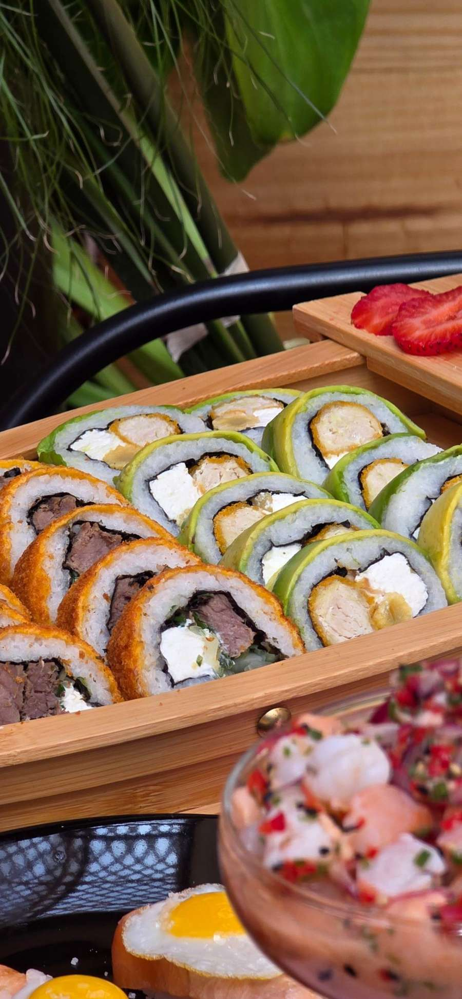
No evaluamos solo el sabor de cada preparación. También la técnica, la identidad y el estándar que cada negocio ofrece a su público. Los premios son herramientas reales de posicionamiento para diferenciarte y fortalecer tu marca.
Todos ganan visibilidad. Tres se llevan el premio.
Evaluación de jurados con conocimiento en sushi
Siete jurados evalúan tu propuesta con una pauta pública. Conoces tu puntaje en cada criterio y sabes en qué destacas y qué puedes mejorar.
Nota televisiva de 3 minutos
Damos a conocer tu negocio, tus preparaciones y tu propuesta con un enfoque profesional.
Un mes de difusión
Tu local aparece en la cadena de difusión del certamen, potenciada por Teleovalle.
Más de 100.000 seguidores
El programa se distribuye en Teleovalle, Periférico, Social Magazine y otros medios.
Puntaje en tiempo real
Sigues tu evaluación en vivo en el sitio web oficial y te comparas con el resto.
Premio Oro
Premio Plata
Premio Bronce
Cuatro pasos, de la inscripción al resultado
Revisa cada paso. Puedes marcar lo que ya tienes listo en el checklist del paso 2.
Asegura tu cupo
Las inscripciones están abiertas durante noviembre de 2026. Los cupos se asignan por orden de inscripción.
Escríbenos por Instagram a @sabrofest con el nombre de tu local y un contacto.
Preparación A
2 rolls armadosPreparación B
2 rolls armadosDos preparaciones distintas entre sí y creación del local. Incorpora productos y preparaciones propias que te diferencien.
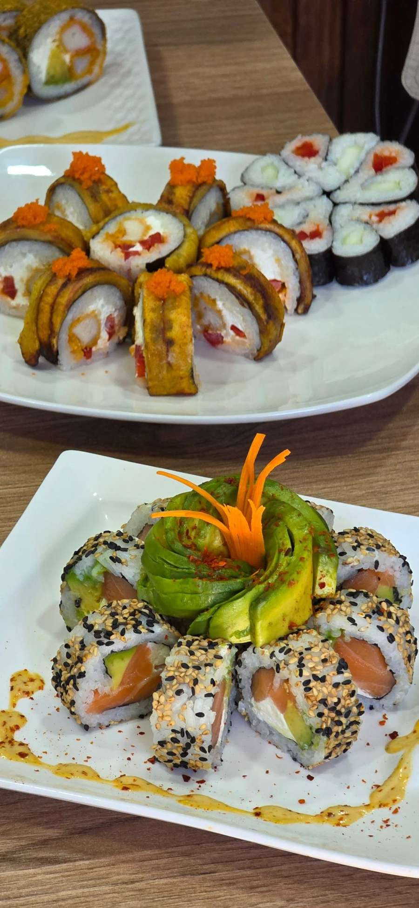
Lo que debes llevar
Te presentas en el local asignado a la hora indicada. Desde la señal oficial de inicio tienes 30 minutos para:
- Paso 1
Cortar ambas preparaciones
- Paso 2
Agregar toppings, salsas y emplatar
- Paso 3
Presentar y servir al jurado
- Paso 4
Ser evaluado
Exceder el tiempo es causal de penalización o descalificación, según el Jefe de Jurado.
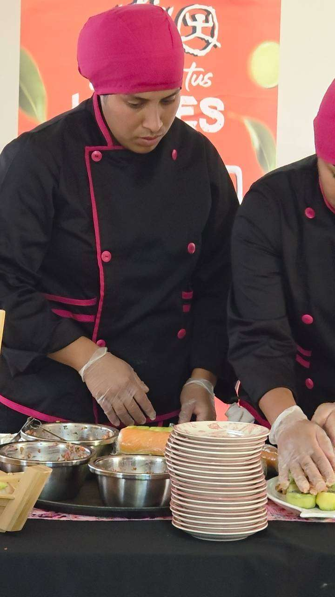
Cada jurado recibe un corte de cada preparación
10 cortes más para la presentación completa del roll
Se emplatan como presentación final para que el jurado vea el roll completo, tal como lo recibe tu cliente.
Mira tu puntaje mientras te evalúan
Puntaje en vivo
Sube con cada jurado que termina de evaluar.
Compárate
Revisa tu posición frente a los demás participantes.
Tus fortalezas
Descubre los criterios donde más destacas.
7 jurados con conocimiento en sushi
Todos califican con la misma pauta y su voto pesa igual. Cada uno firma un compromiso de imparcialidad y su identidad se revela el día del certamen.
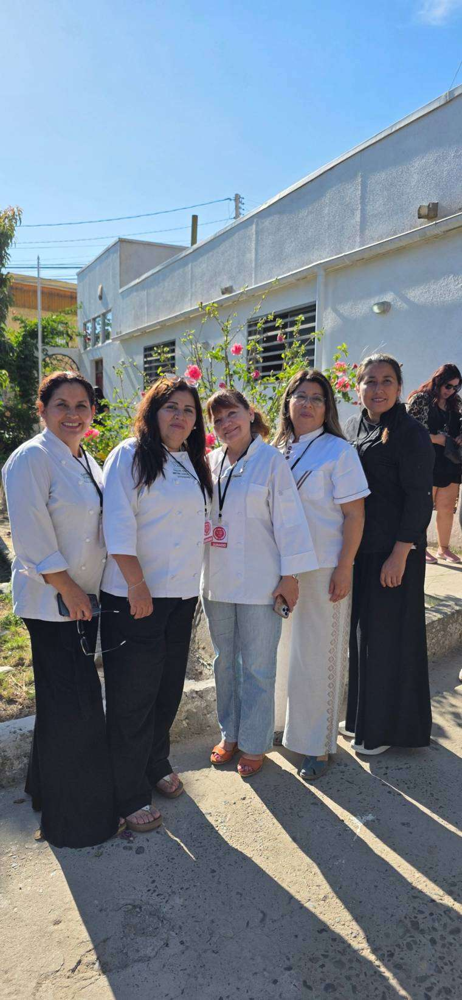
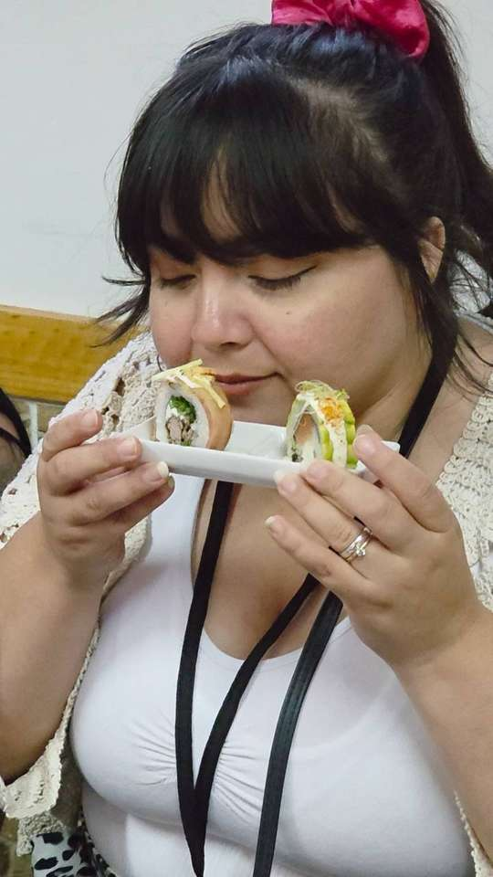
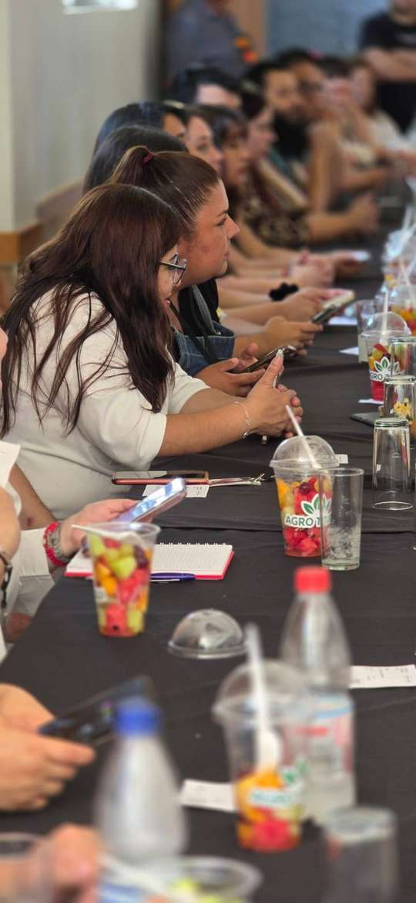
| 01 | Técnica y precisión | 10 pts |
| 02 | Frescura y calidad de ingredientes | 10 pts |
| 03 | Balance de sabores | 10 pts |
| 04 | Sabor general | 10 pts |
| 05 | Aroma | 10 pts |
| 06 | Textura y consistencia | 10 pts |
| 07 | Presentación visual del sushi | 10 pts |
| 08 | Creatividad y originalidad | 10 pts |
| 09 | Presentación de la propuesta al jurado | 10 pts |
| 10 | Vestimenta e identidad del local | 10 pts |
Pon a prueba tu propuesta
Califica tus preparaciones con la misma pauta del jurado y mira dónde está tu fuerte antes del certamen.
Más de 100.000 seguidores verán tu local
El programa del certamen se distribuye en nuestros tres media partners.
- Televisión local
- Video por local
- Backstage
- Programa especial
- Público en vivo
- Puntaje web en vivo
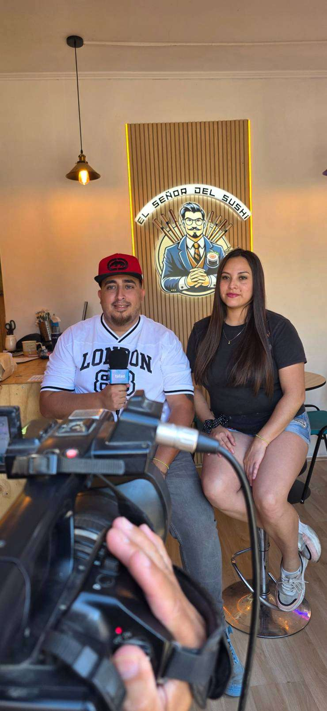
Ellos ya lo ganaron. En 2027 puede ser tu local.
Los ganadores de El Mejor Sushi de Ovalle 2026 recibieron su galardón y hoy lo muestran a cada cliente.
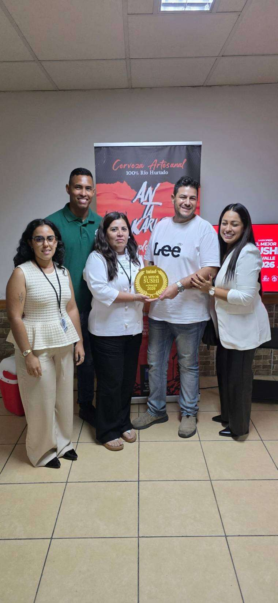
1er lugar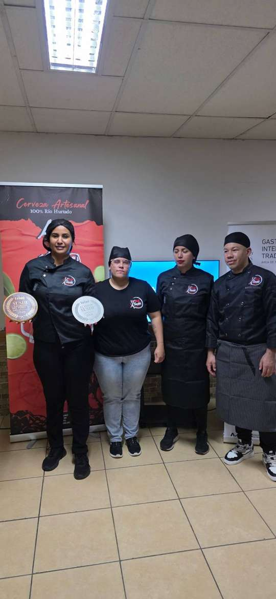
2º lugar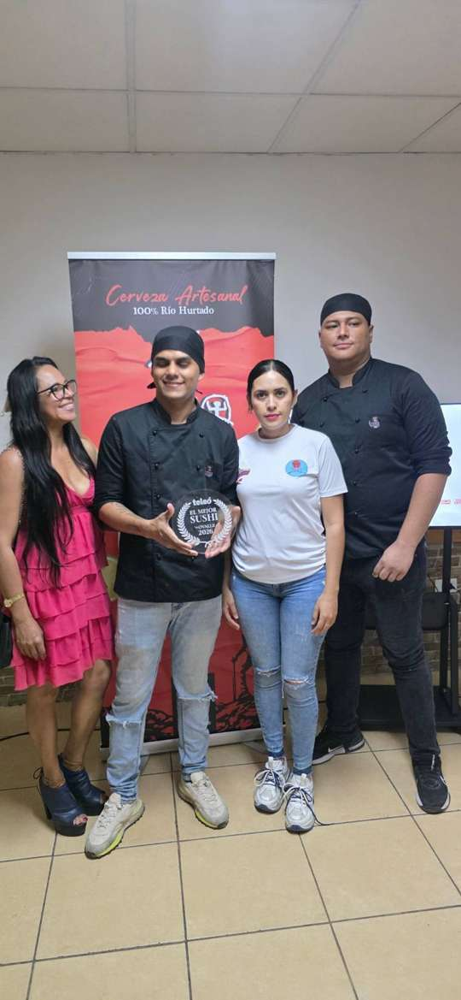
3er lugar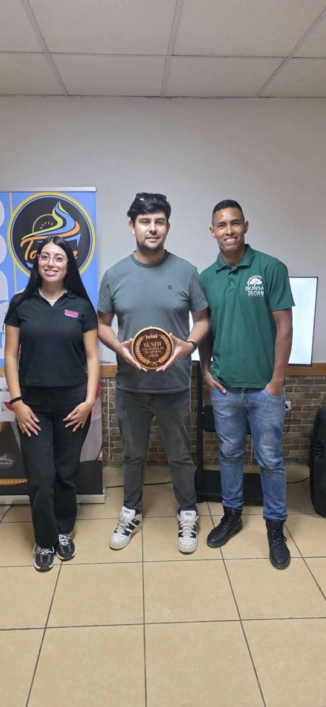
Más PopularDesliza para ver los 4 ganadores →
Videos y galería
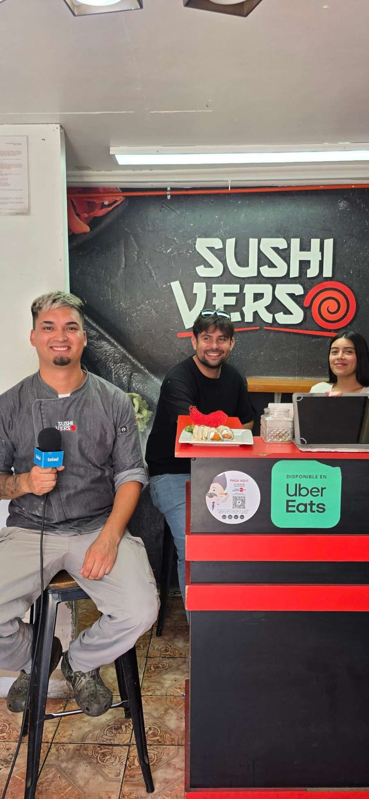
Mira el video de los ganadoresReproducir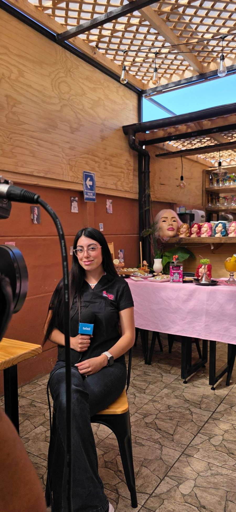
Más videos del certamenReproducir¿Tienes dudas?
Si no encuentras tu respuesta, escríbenos por Instagram a @sabrofest.
- Nov 2026Inscripciones abiertas
Cupos por orden de inscripción - Dic 2026Horario de presentación
Te entregamos la hora en que debes presentar - Dic 2026Certamen y premiación
Evaluación en vivo frente al jurado
¿Dónde se realiza el certamen?
En el local que la organización asigna e informa previamente a cada participante.
¿Cuántos cortes debo entregar?
24 cortes en total: un corte de cada preparación para cada jurado (7 de la Preparación A y 7 de la B) y 10 cortes más para la presentación completa del roll.
¿Los rolls se preparan en el lugar?
No. Llegan armados y en el certamen solo se cortan, se agregan toppings y salsas, y se emplatan.
¿Hay jueces de redes sociales o elegidos por el público?
No. Este año no hay jueces influencers ni jurados elegidos por el público, y eliminamos esas votaciones, incluido el premio Más Popular. Los 3 premios se definen solo con los votos de los 7 jurados seleccionados.
¿Cuántas personas pueden ir por local?
Un representante oficial y hasta dos acompañantes.
¿A qué hora me toca presentar?
Nosotros te entregaremos el horario en que debes presentar. Desde la señal de inicio tienes 30 minutos para sorprender al jurado.
¿Qué pasa si me excedo de los 30 minutos?
Puede haber penalización o descalificación, según el criterio del Jefe de Jurado.
¿Puedo ver mi puntaje?
Sí, en tiempo real en el sitio web oficial, mientras los jueces evalúan.